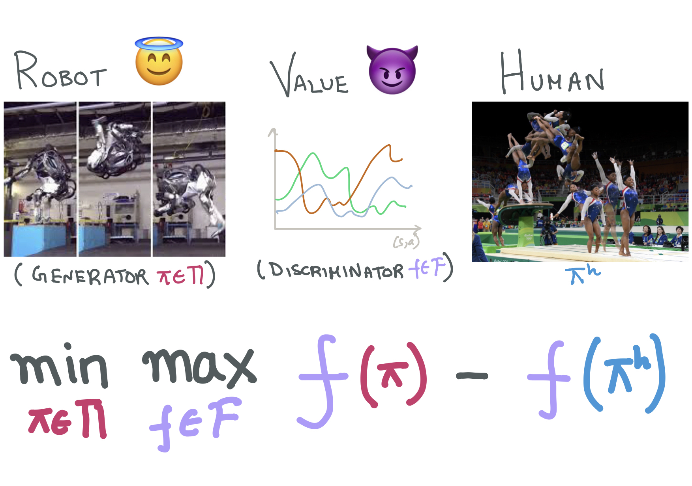
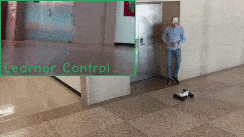
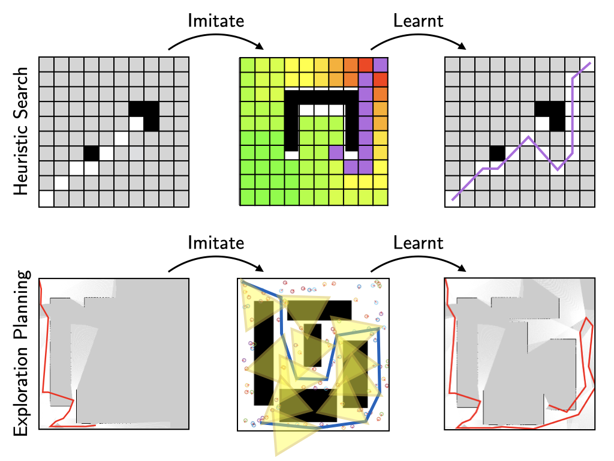

|
 |
Of Moments and Matching: Trade-offs and Treatments in Imitation Learning
Gokul Swamy, Sanjiban Choudhury, Zhiwei Steven Wu, and J Andrew Bagnell International Conference on Machine Learning (ICML), 2021 project page / paper / video / code All of imitation learning can be reduced to a game between a learner (generator) and a value function (discriminator) where the payoff is the performance difference between learner and expert. |
|
 |
Learning from Interventions: Human-robot interaction as both explicit and implicit feedback
Jonathan Spencer, Sanjiban Choudhury, Matt Barnes and Siddhartha Srinivasa Robotics: Science and Systems (RSS), 2020 paper / talk How can we learn from human interventions? Every intervention reveals some information about expert's implicit value function. Infer this function and optimize it. |
|
 |
Data-driven Planning via Imitation Learning
Sanjiban Choudhury, Mohak Bhardwaj, Sankalp Arora, Ashish Kapoor, Gireeja Ranade, Sebastian Scherer, Debadeepta Dey The International Journal of Robotics Research (IJRR), 2018 Finalist for Best Paper of the Year paper Train planners (that operate on partial information) to imitate clairvoyant planners (that have full information) to choose optimal planning decisions. (applies to heuristic search, exploration planning, etc) |